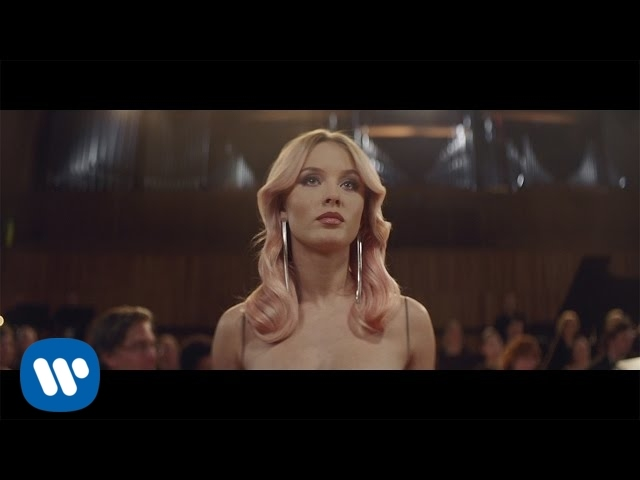

Symphony

Symphony
질문
"I've been hearing symphonies before all I heard was silence"
보기
1
정막뿐이었던 내 삶에 이제 교향곡(교감)이 들리기 시작해요
2
교향곡 연주를 들으러 공연장에 갔는데 사람이 너무 많았어요
3
침묵은 금이라는 말이 있지만 나는 대화하는 게 훨씬 좋아요
4
시끄러운 소리들 때문에 나는 교향곡에 집중할 수가 없네요
정답
1
해설
해석문
고독했던 과거와 사랑을 만난 현재의 변화를 음악에 빗대었습니다.
질문
"A rhapsody for you and me, and every melody is timeless"
보기
1
당신과 나를 위한 광시곡, 그리고 모든 선율은 영원(시대를 초월)해요
2
우리가 즐겨 듣던 노래는 유행이 지나서 이제는 아무도 안 들어요
3
시간은 금방 지나가니까 우리 서둘러서 노래 연습을 시작해요
4
라일락 꽃이 피는 계절이 오면 당신에게 광시곡을 들려줄게요
정답
1
해설
해석문
'Timeless'는 시간이 흘러도 변치 않는 가치를 뜻하는 아름다운 단어입니다.
질문
"And now your song is on repeat and I'm dancin' on to your heartbeat"
보기
1
이제 당신의 노래가 반복되고 있고, 나는 당신의 심박 소리에 맞춰 춤을 춰요
2
노래가 너무 길어서 나는 반복해서 듣는 게 이제는 지겨워졌어요
3
심장 소리가 너무 작아서 의사 선생님이 청진기를 대고 진찰하셨어요
4
춤을 추고 싶다면 신나는 곡으로 바꿔달라고 DJ에게 부탁해 보세요
정답
1
해설
해석문
'On repeat'는 반복 재생, 'Heartbeat'는 심장 박동을 의미합니다.